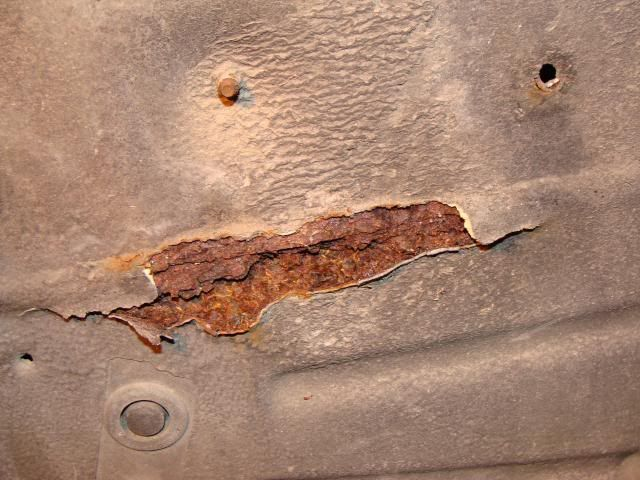

-
I have a thick black rubbery coating on the underside of my car. This picture shows it peeled away from the rust spot I found a while back. This is in the driver's side front wheel well:

I vaguely recall that the car may have been taken to Ziebart after my parents purchased it in '86, but not certain. For any of you "original owners" or those who know this - was there a coating like this on the cars from the factory? When I examine some of the areas of the car, such as the spot right above the rust, it appears very non-uniform as though it were sprayed on thick and ran as it dried. I would not expect a factory undercoat to look like that.
The reason I'm asking this is because I am slightly concerned that there may be other areas of rust where, over 27 years, this underbody layer has been damaged and allowed water to get behind it. Once there's a flaw, I could see it being possible for water to get in and stay trapped and cause a much worse problem than if there were no coating at all. This leads to the obvious dilemma of whether to try and remove all of that or not…
I live in the Houston area, so salt is not a concern for me. It's just the moisture and potential for pitting corrosion. I honestly think this particular corrosion started from inside the engine compartment (driver's frame rail has surface rust along a good portion of its length, suggesting possibly a big break fluid leak that didn't get washed down).
Thoughts?'86 NA - original owner (1986-93) and final owner (2005-present)
My build thread: http://z31performance.com/showthread…-Got-mine-back
-
To the best of my knowledge that's the factory coating, both the z31s I have owned had the same stuff and my sister's same-era Camry had something similar. It is a less than perfect solution to be sure but you will go insane trying to remove it all. Basically, crawl around under the car, look for loose spots, scrape those off, clean up the spots and tremclad them or whatever, call it a day. Yeah you *could* get more into it but there's a serious question of diminishing returns. -
Yeah, agree with that. Spot repairs are something that need to be done, however, and it isn't easy finding all the places it's been damaged.'86 NA - original owner (1986-93) and final owner (2005-present)
My build thread: http://z31performance.com/showthread…-Got-mine-back

Copyright © 2006–. All rights reserved. Privacy Policy